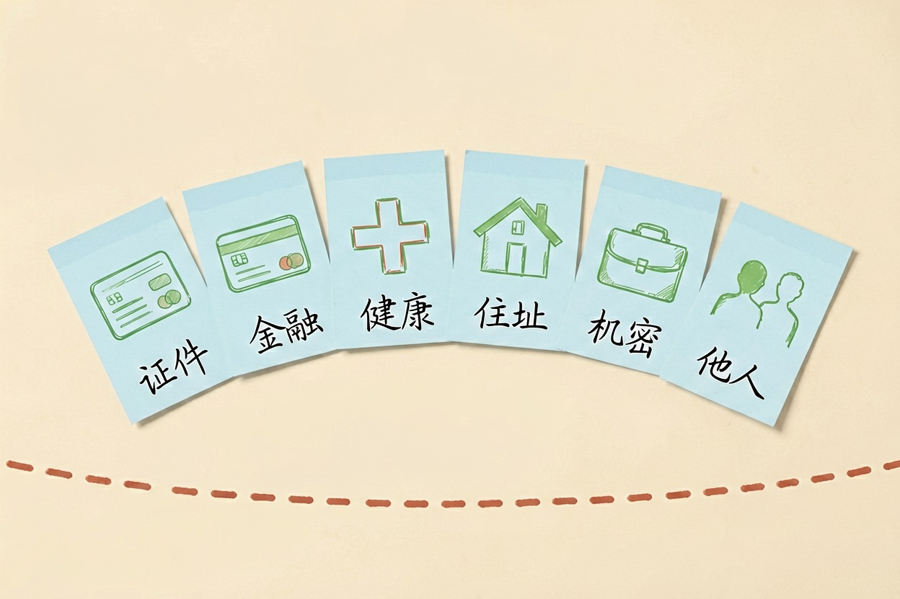
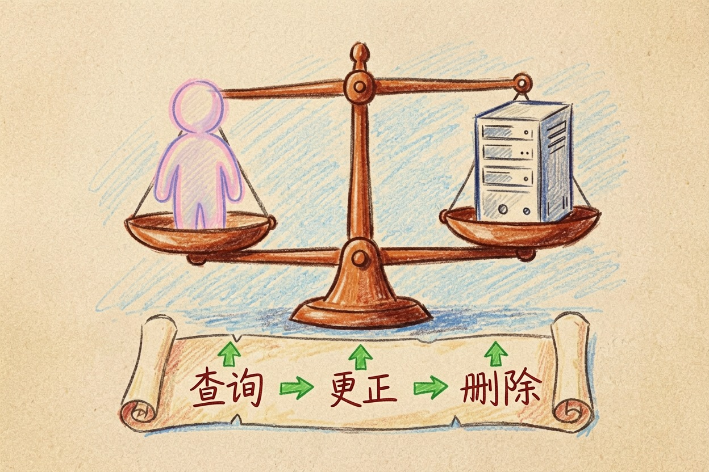
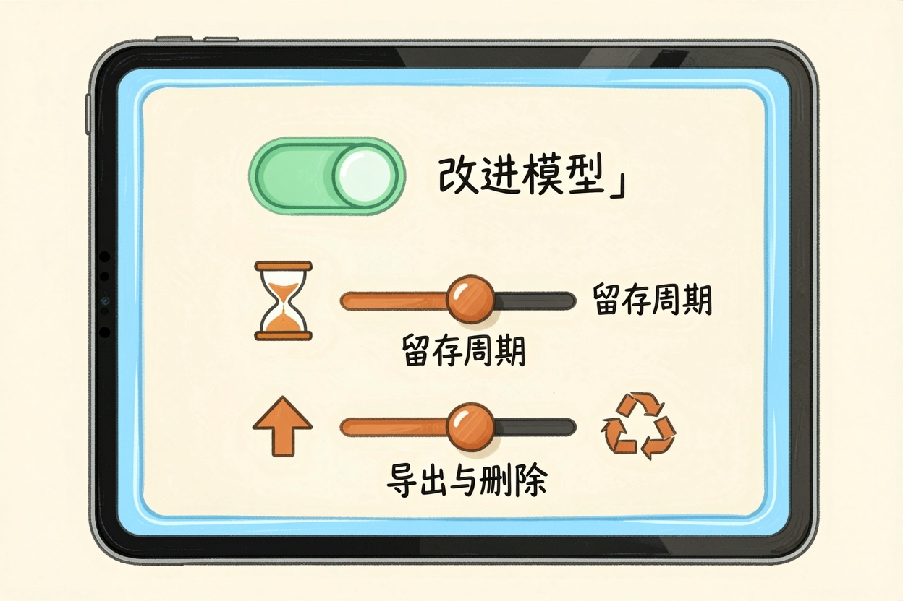

用 AI 会泄露隐私吗？该注意什么
用 AI 会不会泄露隐私，取决于你传了什么。日常问答基本安全，六类敏感信息坚决别传。这篇给你自查清单。
AI 会泄露隐私吗？用 AI 本身不一定泄露隐私，但「传什么」决定风险。日常问答、公开资料，基本安全；身份证号、银行卡、健康医疗、公司机密、他人隐私，这些坚决别传。规则以官方解释和平台隐私政策为准。
AI 会泄露隐私吗：六类红线清单先收好

AI 会泄露隐私吗，答案取决于输入内容。下面六类，别传给任何在线 AI：
- 证件信息：身份证号、护照、驾驶证照片。
- 银行信息：银行卡号、密码、验证码、转账记录。
- 健康医疗：病历、体检报告、用药记录。
- 家庭住址：具体门牌、小区、家庭成员信息。
- 公司机密：未公开财报、内部方案、客户数据。
- 他人隐私：朋友的电话、照片、个人信息。
这六类不是「尽量别传」，是「别传」。日常闲聊、公开资料、不含个人信息的通用问题，可以放心问。分清这两类，风险就控住了一大半。
平台在法律上有什么义务

法律层面也有答案。依据现行法规和《生成式人工智能服务管理暂行办法》，服务提供者不得收集非必要个人信息，也不得非法留存输入信息和使用记录；用户有权查询、复制、更正、删除自己的数据。官方全文见《生成式人工智能服务管理暂行办法》{:target="_blank"}，更完整的个人信息权利见《个人信息保护法》{:target="_blank"}。具体执行，以官方解释和平台隐私政策为准。
三分钟自查：打开隐私设置做三件事

与其担心，不如动手查。多数 AI 工具的设置页里，都有隐私或数据管理入口。进去做三件事：
- 关掉「用我的对话改进模型」：这是最直接影响数据去向的开关。
- 查数据留存：看聊天记录和输入内容存多久、存哪。
- 学会导出和删除：确认自己能随时导出、彻底删除记录。
菜单位置因工具而异，通常在「设置—隐私/数据管理」里。做完这三件事，你对数据的掌控感会明显不同。
公司/办公场景怎么用才安全
办公场景的答案更严。涉密资料、未公开财报、客户数据、内部会议内容，一律不要传进任何在线 AI。判断方法很简单：这份材料能不能贴到公司群里？不能，就别给 AI。
需要处理敏感数据的团队，用企业版或本地部署方案，并遵守公司保密规定。想了解怎么安全地给 AI 喂资料，看怎么给 AI 投喂资料。
真遇到泄露或滥用怎么办
真遇到泄露或滥用，别慌，按顺序处理：先联系平台要求删除；再通过官方举报渠道投诉，具体入口以网信办最新公布为准；涉及财产的，第一时间报警。发消息前，用下面这份清单过一遍：
发消息前自查清单：
1) 这段文字里有六类敏感信息吗？
2) 截图或分享前，会不会把别人的信息带进去？
3) 这个工具，我关掉「用于改进模型」了吗？AI 会泄露隐私吗，现在你心里应该有答案了：风险不在 AI 本身，在你自己传了什么。别把 AI 聊天当绝对私密，也别因噎废食——六类不传、三件事做完，日常使用是安全的。想了解 AI 底层怎么工作，看大模型是什么；需要找工具，去AI 工具导航里挑。 !尾图核心要点回顾
{kind=link}
本文信息核对于 2026-08-06。AI 产品的价格、免费额度与功能变动频繁，实际以各工具官网当前说明为准。